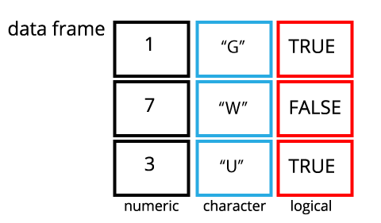

This is the first lesson in a sequence on data analysis in R. Before reading this lesson, check out the “Prelude to Data Analysis”.
Learning Objectives
- Describe what a data frame is.
- Create data frames.
- Use indexing to subset and modify specific portions of data frames.
- Load external data from a .csv file into a data frame.
- Summarize the contents of a data frame.
Suggested Readings
- “Introduction to Data frames in R” Data Camp article, by Ryan Sheehy
- Chapter 10 of “R for Data Science”, by Garrett Grolemund and Hadley Wickham
- Chapters 5.8 - 5.11 of “Hands-On Programming with R”, by Garrett Grolemund
Data frames are the de facto data structure for most tabular data in R. A data frame can be created by hand, but most commonly they are generated by reading in a data file (typically a .csv file).
A data frame is the representation of data in the format of a table where the columns are vectors of the same length. Because columns are vectors, each column must contain a single type of data (e.g., numeric, character, integer, logical). For example, here is a figure depicting a data frame comprising a numeric, a character, and a logical vector:

data.frame() functionYou can create a data frame using the data.frame() function. Here is an example using of members of the Beatles band:
beatles <- data.frame(
firstName = c("John", "Paul", "Ringo", "George"),
lastName = c("Lennon", "McCartney", "Starr", "Harrison"),
instrument = c("guitar", "bass", "drums", "guitar"),
yearOfBirth = c(1940, 1942, 1940, 1943),
deceased = c(TRUE, FALSE, FALSE, TRUE)
)
beatles## firstName lastName instrument yearOfBirth deceased
## 1 John Lennon guitar 1940 TRUE
## 2 Paul McCartney bass 1942 FALSE
## 3 Ringo Starr drums 1940 FALSE
## 4 George Harrison guitar 1943 TRUENotice how the data frame is created - you just hand the data.frame() function a bunch of vectors! This should hopefully help make it clear that a data frame is indeed a series of same-length vectors structured side-by-side.
tibble() functionThe tibble is an improved version of the Base R data frame, and it comes from the dplyr library (which we’ll get into next lesson). If you haven’t already, go ahead and install and load the dplyr library now:
install.packages('dplyr')
library(dplyr)A tibble works just like a data frame, but it has a few small features that make it a bit more useful - to the extent that from here on, we will be using tibbles as our default data frame structure. With this in mind, I’ll often use the term “data frame” to refer to both tibbles and data frames, since they serve the same purpose as a data structure.
Just like with data frames, you can create a tibble using the tibble() function. Here’s the same example as before with the Beatles band:
beatles <- tibble(
firstName = c("John", "Paul", "Ringo", "George"),
lastName = c("Lennon", "McCartney", "Starr", "Harrison"),
instrument = c("guitar", "bass", "drums", "guitar"),
yearOfBirth = c(1940, 1942, 1940, 1943),
deceased = c(TRUE, FALSE, FALSE, TRUE)
)
beatles## # A tibble: 4 x 5
## firstName lastName instrument yearOfBirth deceased
## <chr> <chr> <chr> <dbl> <lgl>
## 1 John Lennon guitar 1940 TRUE
## 2 Paul McCartney bass 1942 FALSE
## 3 Ringo Starr drums 1940 FALSE
## 4 George Harrison guitar 1943 TRUEHere we can see a couple of the differences that make tibbles a bit more intuitive to use:
<> symbols under each column name.character are never converted into factors (don’t worry about this for now…just know that keeping strings as a character class generally makes life easier in R).Now that we have a data frame (tibble) defined, let’s see what we can do with it!
You can get the dimensions of a data frame using the ncol(), nrow(), and dim() functions:
nrow(beatles) # Returns the number of rows## [1] 4ncol(beatles) # Returns the number of columns## [1] 5dim(beatles) # Returns a vector of the number rows and columns## [1] 4 5Data frames must have column names, but row names are optional (by default, row names are just a sequence of numbers). The names() function returns the column names, or you can also be more specific and use the colnames() and rownames() functions:
names(beatles) # Returns a vector of the column names## [1] "firstName" "lastName" "instrument" "yearOfBirth" "deceased"colnames(beatles) # Also returns a vector of the column names## [1] "firstName" "lastName" "instrument" "yearOfBirth" "deceased"rownames(beatles) # Returns a vector of the row names## [1] "1" "2" "3" "4"You can combine data frames using the bind_cols() and bind_rows() functions:
# Combine columns
names <- tibble(
firstName = c("John", "Paul", "Ringo", "George"),
lastName = c("Lennon", "McCartney", "Starr", "Harrison")
)
instruments <- tibble(
instrument = c("guitar", "bass", "drums", "guitar")
)
bind_cols(names, instruments)## # A tibble: 4 x 3
## firstName lastName instrument
## <chr> <chr> <chr>
## 1 John Lennon guitar
## 2 Paul McCartney bass
## 3 Ringo Starr drums
## 4 George Harrison guitar# Combine rows
members1 <- tibble(
firstName = c("John", "Paul"),
lastName = c("Lennon", "McCartney")
)
members2 <- tibble(
firstName = c("Ringo", "George"),
lastName = c("Starr", "Harrison")
)
bind_rows(members1, members2)## # A tibble: 4 x 2
## firstName lastName
## <chr> <chr>
## 1 John Lennon
## 2 Paul McCartney
## 3 Ringo Starr
## 4 George HarrisonNote that to combine rows, the column names must be the same. For example, if we change the second column name in members2 to "LASTNAME", you’ll get a data frame with three columns, two of which will have missing values:
colnames(members2) <- c("firstName", "LASTNAME")
bind_rows(members1, members2)## # A tibble: 4 x 3
## firstName lastName LASTNAME
## <chr> <chr> <chr>
## 1 John Lennon <NA>
## 2 Paul McCartney <NA>
## 3 Ringo <NA> Starr
## 4 George <NA> Harrison$ operatorYou can extract columns from a data frame by name by using the $ operator plus the column name. For example, the instrument column can be accessed using beatles$instrument:
beatles$instrument## [1] "guitar" "bass" "drums" "guitar"You can access elements in a data frame using brackets [] and indices inside the brackets. The general form is:
DF[ROWS, COLUMNS]To index with integers, specify the row numbers and column numbers as vectors.
beatles[1, 2] # Select the element in row 1, column 2## # A tibble: 1 x 1
## lastName
## <chr>
## 1 Lennonbeatles[c(1, 2), c(2, 3)] # Select the elements in rows 1 & 2 and columns 2 & 3## # A tibble: 2 x 2
## lastName instrument
## <chr> <chr>
## 1 Lennon guitar
## 2 McCartney bassbeatles[1:2, 2:3] # Same thing, but using the ":" operator## # A tibble: 2 x 2
## lastName instrument
## <chr> <chr>
## 1 Lennon guitar
## 2 McCartney bassIf you leave either the row or column index blank, it means “selects all”:
beatles[c(1, 2),] # Leaving the column index blank will select all columns## # A tibble: 2 x 5
## firstName lastName instrument yearOfBirth deceased
## <chr> <chr> <chr> <dbl> <lgl>
## 1 John Lennon guitar 1940 TRUE
## 2 Paul McCartney bass 1942 FALSEbeatles[,c(1, 2)] # Leaving the row index blank will select all rows## # A tibble: 4 x 2
## firstName lastName
## <chr> <chr>
## 1 John Lennon
## 2 Paul McCartney
## 3 Ringo Starr
## 4 George HarrisonYou can also use negative integers to specify rows or columns to be excluded:
beatles[-1, ] # Select all rows and except the first## # A tibble: 3 x 5
## firstName lastName instrument yearOfBirth deceased
## <chr> <chr> <chr> <dbl> <lgl>
## 1 Paul McCartney bass 1942 FALSE
## 2 Ringo Starr drums 1940 FALSE
## 3 George Harrison guitar 1943 TRUEYou can use the column names to select elements in a data frame. If you do not include a , to designate which rows to select, R will return all the rows for the selected columns:
beatles[c('firstName', 'lastName')] # Select all rows for the "firstName" and "lastName" columns## # A tibble: 4 x 2
## firstName lastName
## <chr> <chr>
## 1 John Lennon
## 2 Paul McCartney
## 3 Ringo Starr
## 4 George Harrisonbeatles[1:2, c('firstName', 'lastName')] # Select just the first two rows for the "firstName" and "lastName" columns## # A tibble: 2 x 2
## firstName lastName
## <chr> <chr>
## 1 John Lennon
## 2 Paul McCartneyWhen using a logical vector for indexing, the position where the logical vector is TRUE is returned. This is helpful for filtering data frame rows based on conditions. For example, if you wanted to filter out the rows for which Beatles members were still alive, you could first create a logical vector using the deceased column:
beatles$deceased == FALSE## [1] FALSE TRUE TRUE FALSEThen, you could insert this logical vector in the row position of the [] brackets to filter only the rows that are TRUE:
beatles[beatles$deceased == FALSE,]## # A tibble: 2 x 5
## firstName lastName instrument yearOfBirth deceased
## <chr> <chr> <chr> <dbl> <lgl>
## 1 Paul McCartney bass 1942 FALSE
## 2 Ringo Starr drums 1940 FALSEYou can use any of the above methods for accessing elements in a data frame to also modify those elements using the assignment operator (<-). In addition to using brackets to modify specific elements, you can use the $ operator to create new columns in a data frame.
For example, let’s create the variable age by subtracting the yearOfBirth variable from the current year:
beatles$age <- 2019 - beatles$yearOfBirth
beatles## # A tibble: 4 x 6
## firstName lastName instrument yearOfBirth deceased age
## <chr> <chr> <chr> <dbl> <lgl> <dbl>
## 1 John Lennon guitar 1940 TRUE 79
## 2 Paul McCartney bass 1942 FALSE 77
## 3 Ringo Starr drums 1940 FALSE 79
## 4 George Harrison guitar 1943 TRUE 76You can also make a new column of all the same value by just providing one value:
beatles$hometown <- 'Liverpool'
beatles## # A tibble: 4 x 7
## firstName lastName instrument yearOfBirth deceased age hometown
## <chr> <chr> <chr> <dbl> <lgl> <dbl> <chr>
## 1 John Lennon guitar 1940 TRUE 79 Liverpool
## 2 Paul McCartney bass 1942 FALSE 77 Liverpool
## 3 Ringo Starr drums 1940 FALSE 79 Liverpool
## 4 George Harrison guitar 1943 TRUE 76 LiverpoolNow that we know what a data frame is, let’s start working with actual data! We are going to use the msleep dataset, which contains data on sleep times and weights of different mammals. The data are taken from V. M. Savage and G. B. West. “A quantitative, theoretical framework for understanding mammalian sleep.” Proceedings of the National Academy of Sciences, 104 (3):1051-1056, 2007..
The dataset is stored as a comma separated value (CSV) file. Each row holds information for a single animal, and the columns represent:
| Column Name | Description |
|---|---|
| name | Common name |
| genus | The taxonomic genus of animal |
| vore | Carnivore, omnivore or herbivore? |
| order | The taxonomic order of animal |
| conservation | The conservation status of the animal |
| sleep_total | Total amount of sleep, in hours |
| sleep_rem | REM sleep, in hours |
| sleep_cycle | Length of sleep cycle, in hours |
| awake | Amount of time spent awake, in hours |
| brainwt | Brain weight in kilograms |
| bodywt | Body weight in kilograms |
Before we dig into the data, let’s prepare our analysis environment by following these steps:
.R file (File > New File > R Script), and save it as “data_frames.R” inside your “data-analysis-tutorial” R Project folder. From here on, we’ll type all code for this lesson inside this data_frames.R file.Many R packages come with pre-loaded datasets. For example, the ggplot2 library (which we’ll use soon to make plots in R) comes with the msleep dataset already loaded. To see this, install ggplot2 and load the library:
install.packages("ggplot2")
library(ggplot2)
head(msleep) # Preview just the first 6 rows of the data frame## # A tibble: 6 x 11
## name genus vore order conservation sleep_total sleep_rem sleep_cycle awake
## <chr> <chr> <chr> <chr> <chr> <dbl> <dbl> <dbl> <dbl>
## 1 Chee… Acin… carni Carn… lc 12.1 NA NA 11.9
## 2 Owl … Aotus omni Prim… <NA> 17 1.8 NA 7
## 3 Moun… Aplo… herbi Rode… nt 14.4 2.4 NA 9.6
## 4 Grea… Blar… omni Sori… lc 14.9 2.3 0.133 9.1
## 5 Cow Bos herbi Arti… domesticated 4 0.7 0.667 20
## 6 Thre… Brad… herbi Pilo… <NA> 14.4 2.2 0.767 9.6
## # … with 2 more variables: brainwt <dbl>, bodywt <dbl>If you want to see all of the different datasets that any particular package contains, you can call the data() function after loading a library. For example, here are all the dataset that are contained in the ggplot2 library:
data(package = "ggplot2")Data sets in package 'ggplot2':
diamonds Prices of 50,000 round cut diamonds
economics US economic time series
economics_long US economic time series
faithfuld 2d density estimate of Old Faithful data
luv_colours 'colors()' in Luv space
midwest Midwest demographics
mpg Fuel economy data from 1999 and 2008 for 38
popular models of car
msleep An updated and expanded version of the mammals
sleep dataset
presidential Terms of 11 presidents from Eisenhower to Obama
seals Vector field of seal movements
txhousing Housing sales in TXWhat do you do when a dataset isn’t available from a package? Well, you can “read” the data into R from an external file. One of the most common format for storing tabular data (i.e. data that is stored as rows and columns) is the comma separated value (CSV) file.
To load the same msleep data from an external csv file, first use the download.file() function to download the file. The first argument in this function is a character string with the source URL to the data file (“https://github.com/emse6574-gwu/2019-Fall/raw/gh-pages/data/msleep.csv”). The second argument is the destination where you want to locally save the file on your computer.
download.file(
url = "https://github.com/emse6574-gwu/2019-Fall/raw/gh-pages/data/msleep.csv",
destfile = file.path('data', 'msleep.csv')
)Note on making file paths: Notice the use of the
file.path()function to generate the path to the “data” folder on your computer. This function will automatically use the correct “/” symbols to create the file path. This is important because the specific file path syntax is different depending on your computer operating system (e.g. mac is “/” and windows is “\”). In the above example, the destination file path used was:
file.path('data', 'msleep.csv')## [1] "data/msleep.csv"Now you are now ready to load the downloaded data! The Base R function for reading in a csv file is called read.csv(), but it has some quirky aspects in how it formats the data (in particular, character variables). So instead we are going to use an improved function, read_csv(), from the readr package.
First, install the readr package if you haven’t already:
install.packages("readr")Now load the data:
library(readr)
msleep <- read_csv(file.path('data', 'msleep.csv'))## Parsed with column specification:
## cols(
## name = col_character(),
## genus = col_character(),
## vore = col_character(),
## order = col_character(),
## conservation = col_character(),
## sleep_total = col_double(),
## sleep_rem = col_double(),
## sleep_cycle = col_double(),
## awake = col_double(),
## brainwt = col_double(),
## bodywt = col_double()
## )R tells us that we’ve successfully read in some data and a quick summary of the data type for each column in the dataset.
You can view the entire dataset in a tabular format (similar to how Excel looks) by using the View() function, which opens up another tab to view the data. Note that you cannot modify the data this way - you can just look at it:
View(msleep)In addition to viewing the whole dataset with View(), you can quickly view summaries of the data frame with a few convenient functions. For example, you can look at the first 6 rows by using the head() function:
head(msleep)## # A tibble: 6 x 11
## name genus vore order conservation sleep_total sleep_rem sleep_cycle awake
## <chr> <chr> <chr> <chr> <chr> <dbl> <dbl> <dbl> <dbl>
## 1 Chee… Acin… carni Carn… lc 12.1 NA NA 11.9
## 2 Owl … Aotus omni Prim… <NA> 17 1.8 NA 7
## 3 Moun… Aplo… herbi Rode… nt 14.4 2.4 NA 9.6
## 4 Grea… Blar… omni Sori… lc 14.9 2.3 0.133 9.1
## 5 Cow Bos herbi Arti… domesticated 4 0.7 0.667 20
## 6 Thre… Brad… herbi Pilo… <NA> 14.4 2.2 0.767 9.6
## # … with 2 more variables: brainwt <dbl>, bodywt <dbl>Similarly, you can view the last 6 rows by using the tail() function:
tail(msleep)## # A tibble: 6 x 11
## name genus vore order conservation sleep_total sleep_rem sleep_cycle awake
## <chr> <chr> <chr> <chr> <chr> <dbl> <dbl> <dbl> <dbl>
## 1 Tenr… Tenr… omni Afro… <NA> 15.6 2.3 NA 8.4
## 2 Tree… Tupa… omni Scan… <NA> 8.9 2.6 0.233 15.1
## 3 Bott… Turs… carni Ceta… <NA> 5.2 NA NA 18.8
## 4 Genet Gene… carni Carn… <NA> 6.3 1.3 NA 17.7
## 5 Arct… Vulp… carni Carn… <NA> 12.5 NA NA 11.5
## 6 Red … Vulp… carni Carn… <NA> 9.8 2.4 0.35 14.2
## # … with 2 more variables: brainwt <dbl>, bodywt <dbl>You can also view an overview summary of each column and it’s data types by using the str() or glimpse() functions (these both do the same thing, but I prefer the output of glimpse()):
glimpse(msleep)## Rows: 83
## Columns: 11
## $ name <chr> "Cheetah", "Owl monkey", "Mountain beaver", "Greater sho…
## $ genus <chr> "Acinonyx", "Aotus", "Aplodontia", "Blarina", "Bos", "Br…
## $ vore <chr> "carni", "omni", "herbi", "omni", "herbi", "herbi", "car…
## $ order <chr> "Carnivora", "Primates", "Rodentia", "Soricomorpha", "Ar…
## $ conservation <chr> "lc", NA, "nt", "lc", "domesticated", NA, "vu", NA, "dom…
## $ sleep_total <dbl> 12.1, 17.0, 14.4, 14.9, 4.0, 14.4, 8.7, 7.0, 10.1, 3.0, …
## $ sleep_rem <dbl> NA, 1.8, 2.4, 2.3, 0.7, 2.2, 1.4, NA, 2.9, NA, 0.6, 0.8,…
## $ sleep_cycle <dbl> NA, NA, NA, 0.1333333, 0.6666667, 0.7666667, 0.3833333, …
## $ awake <dbl> 11.9, 7.0, 9.6, 9.1, 20.0, 9.6, 15.3, 17.0, 13.9, 21.0, …
## $ brainwt <dbl> NA, 0.01550, NA, 0.00029, 0.42300, NA, NA, NA, 0.07000, …
## $ bodywt <dbl> 50.000, 0.480, 1.350, 0.019, 600.000, 3.850, 20.490, 0.0…Finally, you can view summary statistics for each column using the summary() function:
summary(msleep)## name genus vore order
## Length:83 Length:83 Length:83 Length:83
## Class :character Class :character Class :character Class :character
## Mode :character Mode :character Mode :character Mode :character
##
##
##
##
## conservation sleep_total sleep_rem sleep_cycle
## Length:83 Min. : 1.90 Min. :0.100 Min. :0.1167
## Class :character 1st Qu.: 7.85 1st Qu.:0.900 1st Qu.:0.1833
## Mode :character Median :10.10 Median :1.500 Median :0.3333
## Mean :10.43 Mean :1.875 Mean :0.4396
## 3rd Qu.:13.75 3rd Qu.:2.400 3rd Qu.:0.5792
## Max. :19.90 Max. :6.600 Max. :1.5000
## NA's :22 NA's :51
## awake brainwt bodywt
## Min. : 4.10 Min. :0.00014 Min. : 0.005
## 1st Qu.:10.25 1st Qu.:0.00290 1st Qu.: 0.174
## Median :13.90 Median :0.01240 Median : 1.670
## Mean :13.57 Mean :0.28158 Mean : 166.136
## 3rd Qu.:16.15 3rd Qu.:0.12550 3rd Qu.: 41.750
## Max. :22.10 Max. :5.71200 Max. :6654.000
## NA's :27In summary, here is a non-exhaustive list of functions to get a sense of the content/structure of a data frame:
dim(df) - returns a vector with the number of rows in the first element, and the number of columns as the second element (the dimensions of the object).nrow(df) - returns the number of rows.ncol(df) - returns the number of columns.head(df) - shows the first 6 rows.tail(df) - shows the last 6 rows.names(df) - returns the column names (synonym of colnames() for data.frame objects).rownames(df) - returns the row names.glimpse(df) or str(df) - structure of the object and information about the class, length and content of each column.summary(df) - summary statistics for each column.Note: most of these functions are “generic”, they can be used on other types of objects besides data.frame.
Now that you’ve got some data into R and are up to speed with what a data frame / tibble is, you may be asking, “so what now?” Well, over the next two lessons we will learn more about how to manipulate data frames and explore the underlying information with visualizations.
But just to give you an idea of where we’re going, here are a few pieces of information from the msleep dataset:
library(ggplot2)
ggplot(msleep, aes(x=brainwt, y=bodywt)) +
geom_point(alpha=0.6) +
stat_smooth(method='lm', col='red', se=F, size=0.7) +
scale_x_log10() +
scale_y_log10() +
labs(x='log(brain weight) in g', y='log(body weight) in kg') +
theme_minimal()ggplot(msleep, aes(x=brainwt, y=sleep_total)) +
geom_point(alpha=0.6) +
scale_x_log10() +
scale_y_log10() +
stat_smooth(method='lm', col='red', se=F, size=0.7) +
labs(x='log(brain weight) in g', y='log(total sleep time) in hours') +
theme_minimal()ggplot(msleep, aes(x=sleep_total)) +
geom_histogram() +
labs(x = 'Total sleep time in hours',
title = 'Histogram of total sleep time') +
theme_minimal()Page sources:
Some content on this page has been modified from other courses, including: